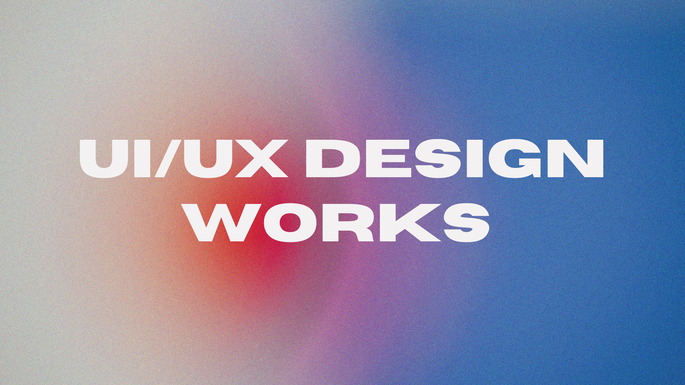
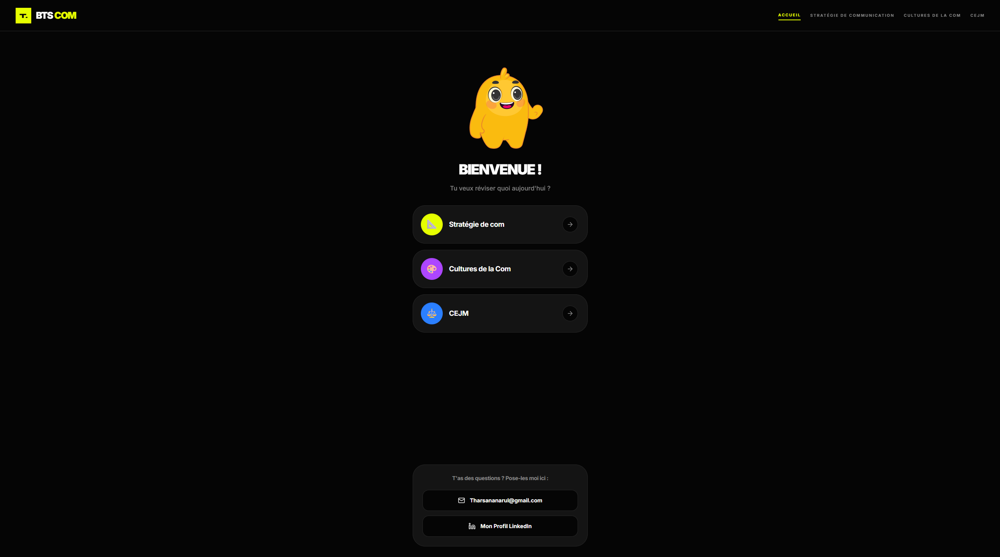
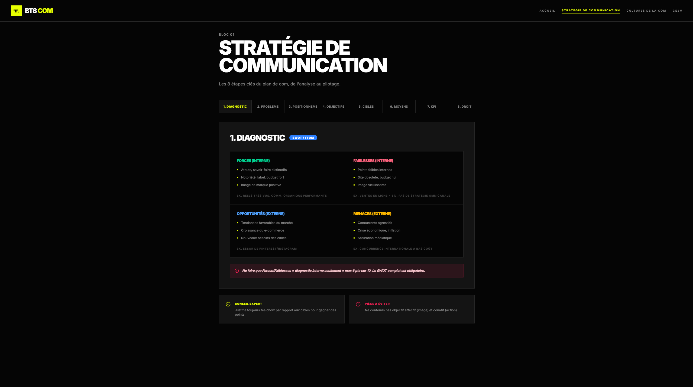
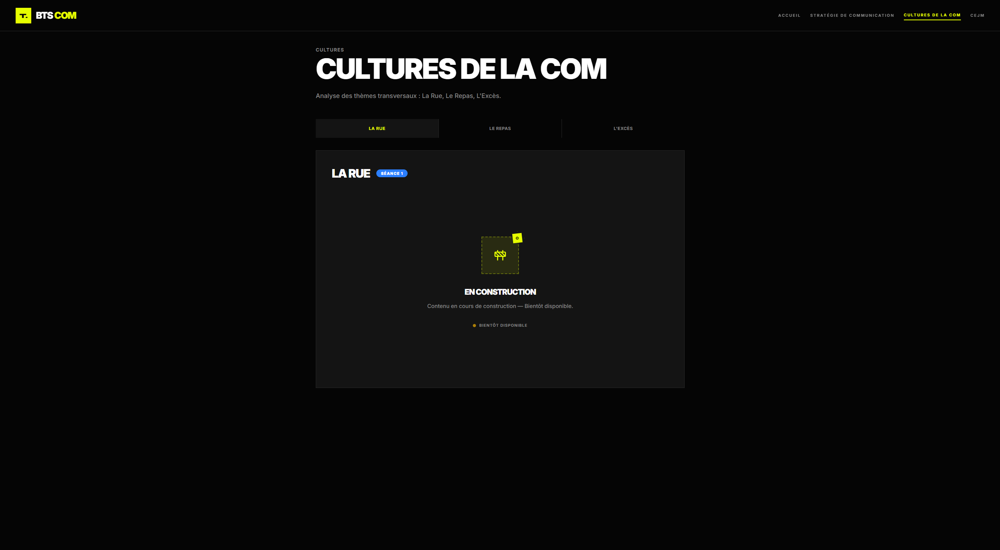
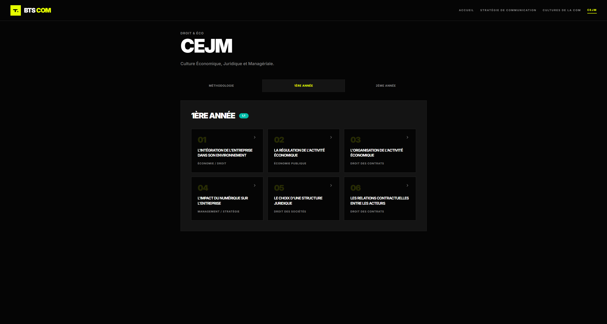
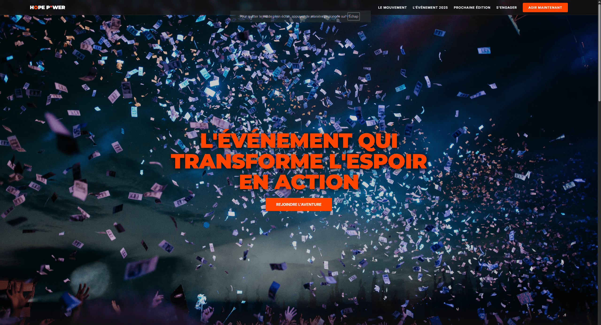
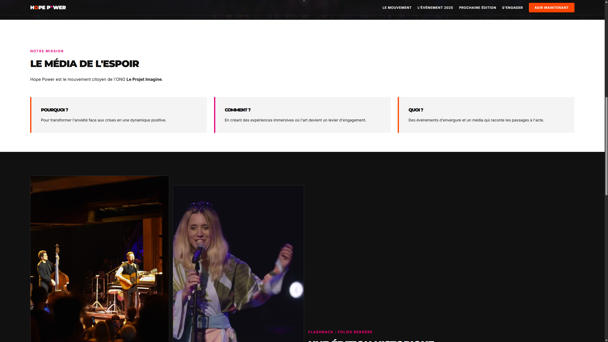
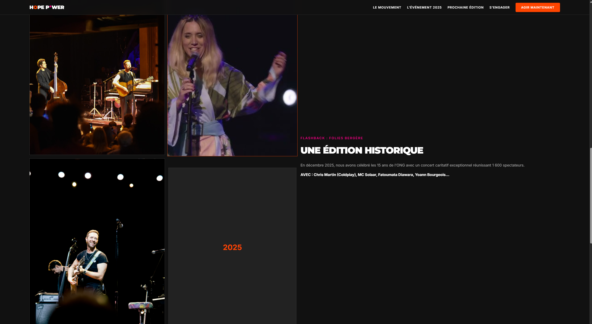
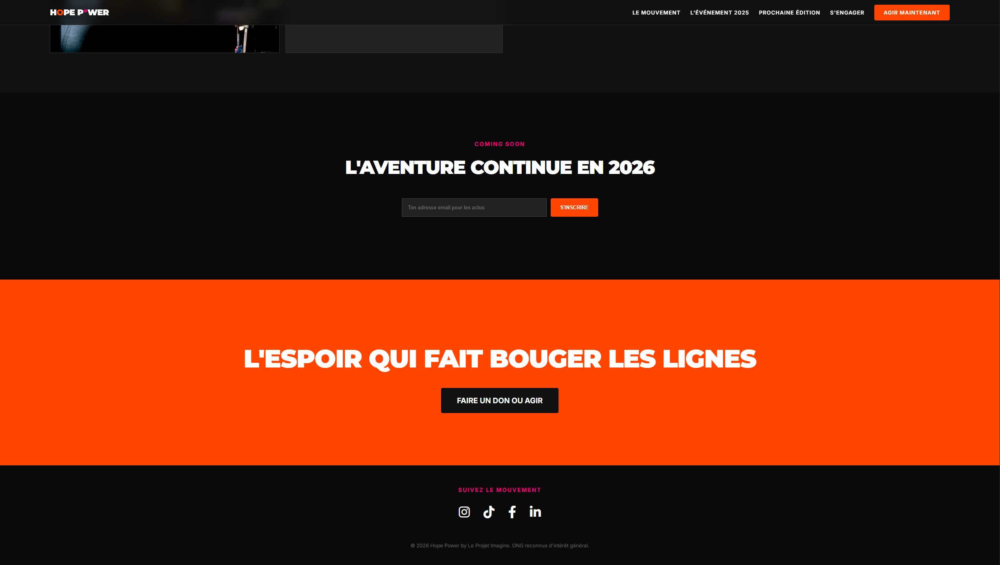

Cette section regroupe mes travaux de conception d'interfaces et de développement web. Passionné par l'expérience utilisateur, j'ai réalisé ces projets en mettant l'accent sur l'ergonomie, l'accessibilité et une identité visuelle forte. Vous y trouverez ma plateforme de révision développée pour le BTS ainsi que mes maquettes de design d'interfaces modernes.
Un outil complet conçu pour centraliser toutes les ressources de révision. L'architecture a été pensée pour une navigation fluide sur mobile et desktop.
Voir le site en direct →



Conception d'une interface pour une application axée sur l'énergie durable. Focus sur les contrastes, la lisibilité et l'aspect premium de l'interface.
Voir la maquette →


